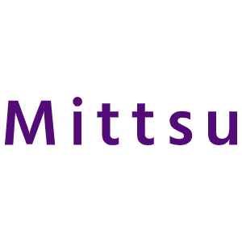
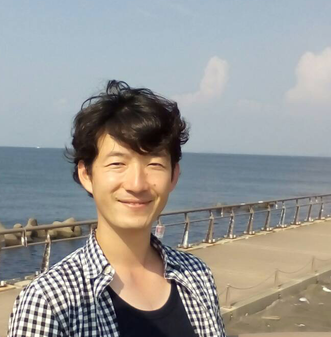

<!DOCTYPE html>
<html lang="ja">
<head>
    <meta charset="utf-8">
    <title>My Website</title>
    <link href="style.css" rel="stylesheet" type="text/css" />
</head>
<body>
    <header>
        <h1><a href="index.html"></h1>
        <nav>
            <ul>
                <li><a href="photography.html">Photography</a></li>
                <li><a href="contact.html">Contact</a></li>
            </ul>
        </nav>
    </header>
    <main>
        <div class="container">
            
            <div class="text">
                <h2>堀内　満史 <br>(horiuchi mitsushi)</h2><br />
                <div>
                    <label>ニックネーム 　　みっつ</label><br />
                </div>
                <div>
                    <label>出身地　　　 　　北海道(厚岸町)</label><br />
                </div>
                <div>
                    <label>住所　　　 　　　馬堀町</label><br />
                </div>
                <div>
                    <label>好きなこと 　　　カラオケ、ジム、サウナ、BBQ、海遊び</label><br />
                </div>
                <div>
                    <label>家族構成 　　　　 妻・娘(5才)</label><br />
                </div>
                <div>
                    <label>経歴</label>
                    <p>
                        ■ 　1983年2月　北海道厚岸郡厚岸町で沿岸漁業(魚・昆布) を営む両親のもと、姉兄後の末っ子(次男)として誕生<br/>
                        ■ 　18歳(高校)まで厚岸町に住み、家業である漁業を嫌々手伝う<br/>
                        ■ 　19歳(大学)で、半ば家を飛び出すかのように単身札幌(小樽)へ行き、4年間にわたり情報技術(IT)を学ぶ<br/>
                    　　　　　在学中(2004年)に水深10mのサルベージを目的とした「水中探査ロボット(Mercury)」を共同開発<br/>
                        ■　2005年4月から独立系SIerのシステムエンジニアとして13年間活動し、20以上の業務アプリケーション開発に従事<br/>
                        　　プロジェクトの推進、管理、調達および、開発工程全般を任されるプロジェクトリーダとして10年程の実務経験<br/>
                        　　システム化(企画)提案・見積および、保守・運用サポート等の実務経験、セミナー講師経験有り<br/>
                        　　[業種・業界]<br/>　　　通信(携帯電話) 、地方自治体、食品卸業、アパレル、金融、海運業など<br/><br/>
                        　　[開発実績例]<br/>　　　販売管理、WebEDI(受発注)、営業支援・業績管理・予実分析(BI)、在庫管理、店舗管理<br/>
                        　　　バリューチェーン、管理会計、会員管理、児童手当(旧子ども手当)、確定申告、携帯向けGPS情報変換など<br/><br/>
                        　　[セミナー講師実績]]<br/>　　　新人研修(Excel, Access, VB.NET, SQL)、VB.NET基礎・応用セミナー、Android開発セミナー<br/><br/>
                        ■ 　2018年4月より横須賀市で、ICT・IoTクリエーターとして活動をスタート<br/>
                        ■ 　2018年7月3日　株式会社プライスレスラボ(Priceless Lab inc.) 設立<br/>
                    </p>
                </div>
                <div class="location-map">
                    <iframe src="https://www.google.com/maps/embed?pb=!1m18!1m12!1m3!1d3256.9865612533645!2d139.6683934172677!3d35.28146037992259!2m3!1f0!2f0!3f0!3m2!1i1024!2i768!4f13.1!3m3!1m2!1s0x6018400a8453ffff%3A0x5eeffc0cee828ffc!2s16%20Startups!5e0!3m2!1sja!2sjp!4v1571388450688!5m2!1sja!2sjp" width="400" height="300" frameborder="0" style="border:0;" allowfullscreen=""></iframe>
                </div>
            </div>
        </div>
    </main>
    <footer>
        <div class="footer-sm">
            <!-- <a href="http://www.twitter.com">
                
            </a> -->
            <a href="http://www.facebook.com">
                
            </a>
            <!-- <a href="http://www.instagram.com">
                
            </a> -->
        </div>
    </footer>
</body>
</html>
